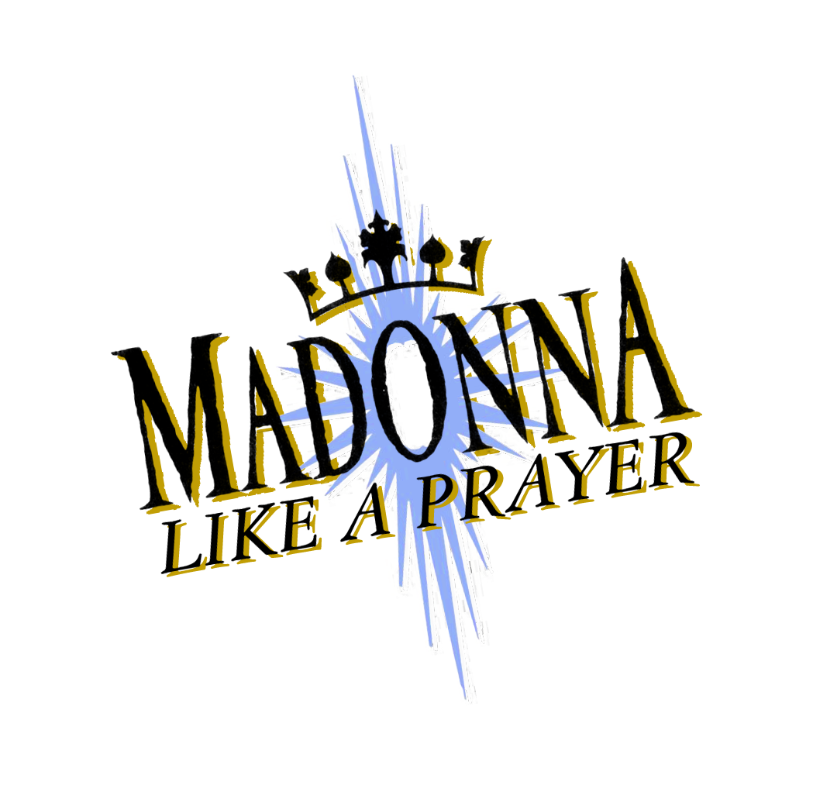
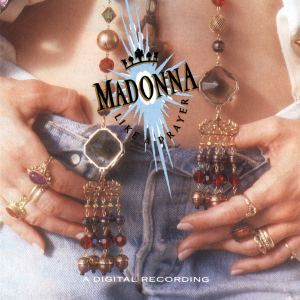
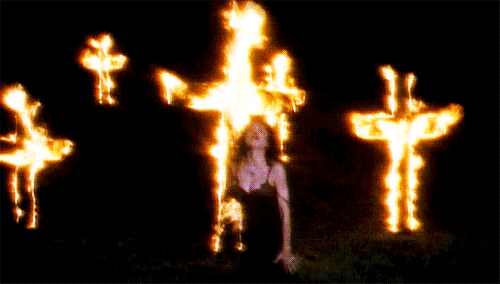
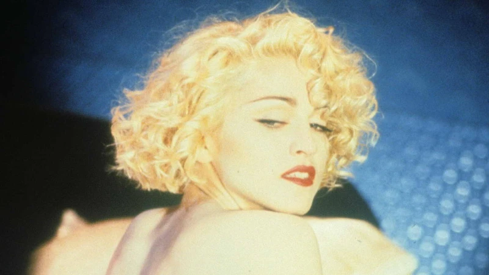
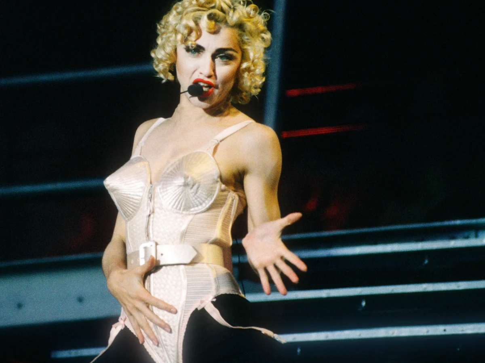
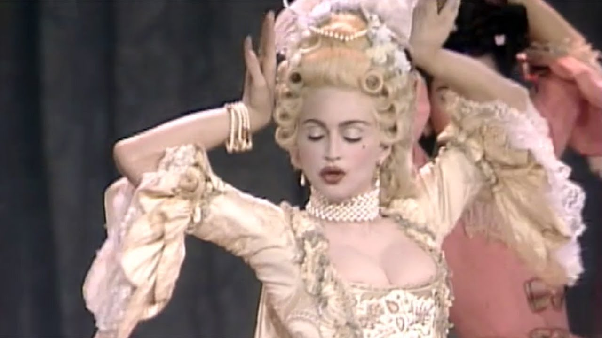
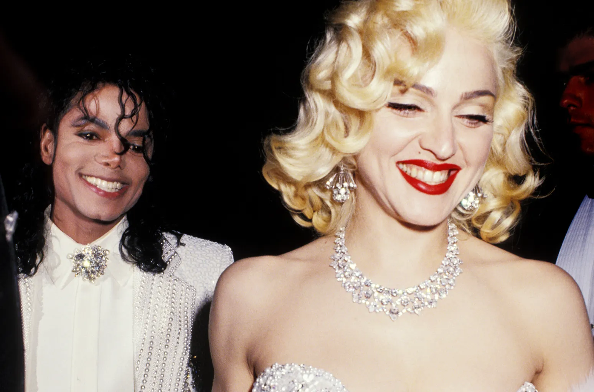

Like a Prayer es el cuarto álbum de estudio de Madonna. Lanzado en 1989, es uno de los álbumes más emblemáticos de la Reina del Pop y también uno de los más vendidos y universalmente aclamados. La canción "Like a Prayer" fue el séptimo sencillo de Madonna en llegar al #1 del Billboard Hot 100 y logró mantenerse en la cima por 3 semanas. Además, el álbum logró posicionar un total de 4 sencillos en el top 10 y tanto "Express Yourself" como "Cherish" llegaron al #2. Temáticamente, se inspiró en su divorcio con el actor Sean Penn, el maltrato que sufrió de parte suya, el amor propio, sus pensamientos suicidas tras cumplir 30 años (la edad que tenía su madre cuando falleció), la relación complicada con su padre y presuntamente un aborto espontáneo. Mientras que en el apartado musical, continuó con el pop ochentero insignia de esta etapa de su carrera, además de incorporar gospel y rock como en su colaboración con Prince. Like a Prayer se mantuvo en la cima del Billboard 200 de E.E.U.U. por 6 semanas.

Enfrentamiento con el Vaticano tras mostrar cruces en fuego en el video musical de "Like a Prayer".

Madonna en el video musical de "Express Yourself", uno de los más caros de todos los tiempos.

Madonna usando el icónico corset en cono de Jean Paul Gautier para el Blonde Ambition Tour de 1990.

Madonna haciendo drag de María Antonieta con "Vogue" de fondo en los VMAs de 1990.

La Reina del Pop llevando al Rey del Pop como su cita a los premios Oscar de 1991.